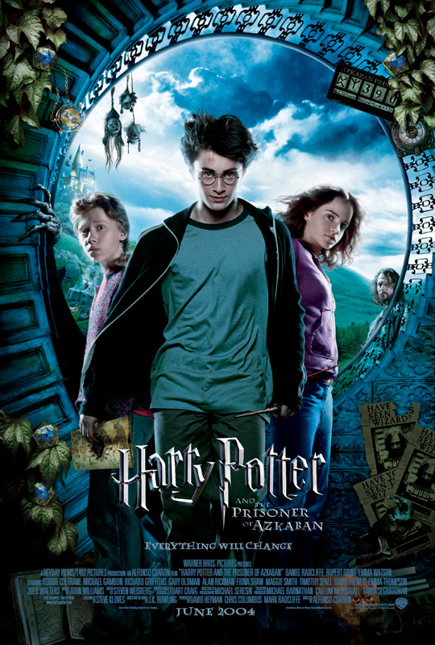

 Released: 2004 Director: Alfonso Cuarón Actors: Daniel Radcliffe Rupert Grint Emma Watson Michael Gambon David Thewlis Alan Rickman Related films: Harry Potter and the Sorcerer's Stone Harry Potter and the Goblet of Fire Harry Potter and the Chamber of Secrets